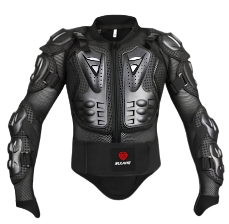

The REV'IT! Poseidon 3 GTX is a high-performance motorcycle jacket designed for extreme riding conditions.
The Motorcycle Body Armor is a protective mesh jacket designed for off-road riding, motocross, and other action sports.
It features a breathable mesh base layer, hard plastic impact protectors on the chest, back, shoulders, and elbows, and a wide, adjustable Velcro kidney belt for a secure fit and lower back support.
| Specification Category | Details |
|---|---|
| Outer Shell Material | 2L Nylon 400D GORE-TEX® fabric, 3L Nylon 200D GORE-TEX® fabric, and Neoprene. |
| Waterproofing | 100% waterproof and breathable laminated GORE-TEX® membrane. |
| Insulation | Detachable thermal liner for cold weather riding. |
| Ventilation | VCS|Aquadefence panels on the chest with one-handed FidLock® magnetic fasteners, upper arm zippers, and an upper back air exhaust. |
| Included Protection | SEEFLEX™ CE-level 2 protectors at the shoulders and elbows (elbow pads are height-adjustable). |
| Upgradable Protection | Pockets prepared for SEESOFT™ CE-level 2 back protector and SEESOFT™ CE-level 1 divided chest protector. Ready for Avertum Tech-Air® airbag system. |
| Adjustability | Flexisnap collar, drawcord at the hem, adjustment straps on the lower arms and waist, and adjustment tabs at the cuffs. |
| Visibility | Laminated reflective panels on the chest, upper arms, and back, plus a laminated reflective logo on the back. |
| Pockets & Storage | 2 waterproof stash pockets at the waist, 1 waterproof back pocket, 1 chest slit pocket, 1 sleeve pocket, 3 inner pockets, and 1 inner pocket inside the thermal liner. |
| Additional Features | Soft spacer mesh for comfort behind the armor, and a short connection zipper to attach to riding pants. |
| Safety Certification | CE Certified to EN 17092 standard, achieving a Class AA rating. |